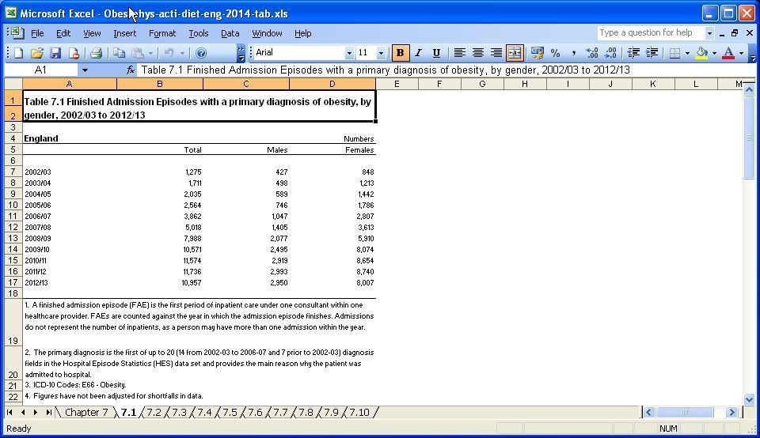
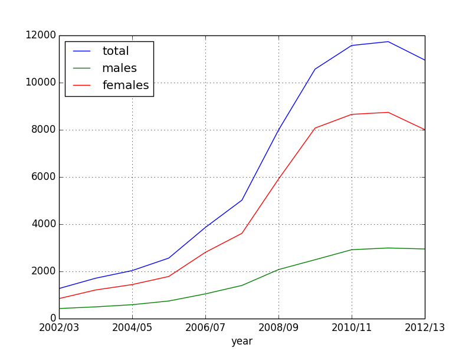
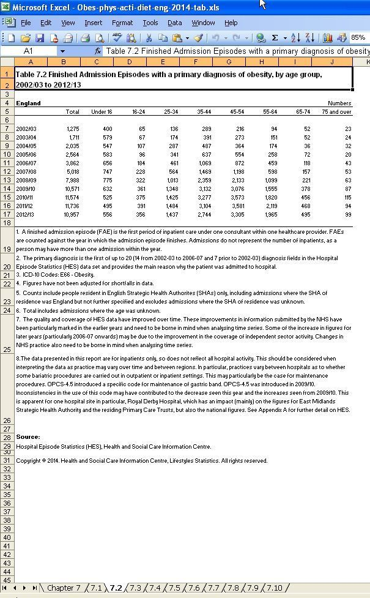
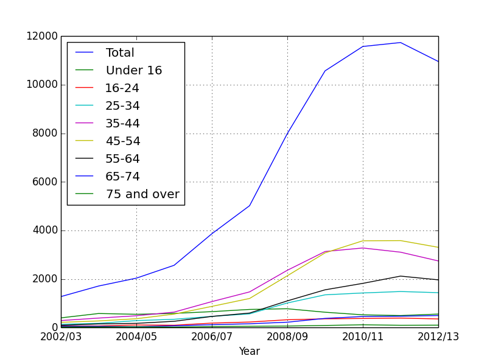
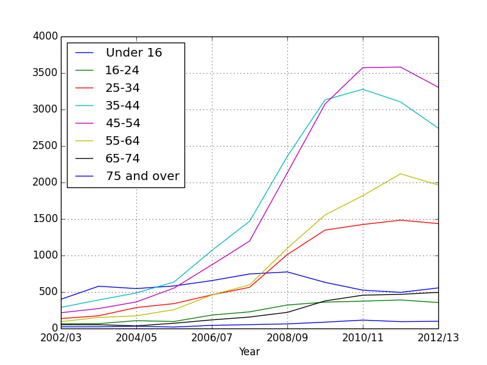
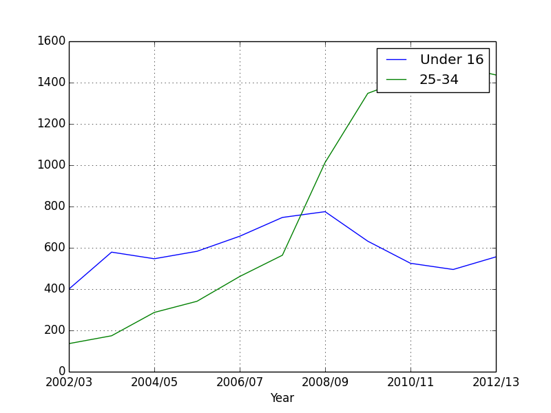
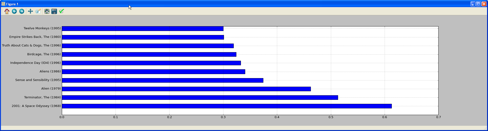

Data Analysis with Pandas

Beginners Start Here:
Create a Word Counter in Python
An introduction to Numpy and Matplotlib
Introduction to Pandas with Practical Examples (New)
Main Book
Image and Video Processing in Python
Audio and Digital Signal Processing (DSP)
Machine Learning Section
Machine Learning with an Amazon like Recommendation Engine
You must have seen in Chapter on plotting that Python can be used to parse csv files. You might also have noted that it is fairly painful. While there are libraries like csv_reader(), they still aren’t perfect. You still have to do a lot of stuff manually.
Enter Pandas, which is a great library for data analysis. It is quite high level, so you don’t have to muck about with low level details, unless you really want to.
If you are dealing with complicated or large datasets, seriously consider Pandas. It is based on numpy/scipy, sort of a superset of it. But it gives you a lot of powerful features, like read directly from a Microsoft Excel file, do data joins (like you would do in SQL) etc, some of which features we will go over.
Just one more thing before we continue. Pandas has two basic data structures: Series and Dataframes.
Series is like numpy’s array/dictionary, though it comes with a lot of extra features. Dataframes is a two dimensional data structure that contains both column and row information, like the fields of an Excel file. Remember an Excel file has rows and columns, and an optional header field. All of this data can be represented in a Dataframe. That’s what we’ll use in our examples below.
Installing pandas
You should get Pandas if you installed Anaconda, as recommended.
Note to people without a graphical interface: If you can’t view the graphs because you have no GUI, you can save the graphs instead. See here for details.
Analyse obesity in England
I’m using the 2014 data from here:
https://data.gov.uk/dataset/statistics_on_obesity_physical_activity_and_diet_england
I’ll also put it in the Github directory, so you don’t have to download it. Make sure you open the file in Excel (or Openoffice) and view it, so you know what we’re talking about. Do that now, and have a look at the different sections. Especially section 7.1 and 7.2, as that’s what we’ll focus on.
Let’s get started then.
import pandas as pd
import matplotlib.pyplot as plt
Pandas is imported as pd to save typing, in the same way we import numpy as np.
data = pd.ExcelFile("Obes-phys-acti-diet-eng-2014-tab.xls")
print(data.sheet_names)
We are opening the xls file. The great thing about pandas is that you can open Excel files directly. Normally, most libraries can only work with csv files. We then print all the sheet names.
['Chapter 7', '7.1', '7.2', '7.3', '7.4', '7.5', '7.6', '7.7', '7.8', '7.9', '7.10']
For those of you not comfortable with Excel, a sheet is one “page”, as it were, of data. Rather than having all the data in one huge unmanageable sheet, users break the data into multiple sheets. Above, we printed all the available sheets.
Section 7.1: Obesity by gender
Let’s have a look at sheet 1:

There are four columns: Year, total, males and females. The Year column doesn’t have a header- if you look at line 5, you will see the header for year is empty.
I’ll show you two ways to read in data. In the first one, you define the header columns yourself.
# Define the columns to be read
columns1 = ['year', 'total', 'males', 'females']
So I’m defining a list with four header entries: ‘year’, ‘total’, ‘males’ and ‘females’.
data_gender = data.parse(u'7.1', skiprows=4, skipfooter=14, names=columns1)
We read sheet 7.1. If you look at the actual sheet, the top 4 and bottom 14 rows contain useless info, so we skip it (skiprows=4, skipfooter=14, ). Finally, we tell pandas to name the column headers using our list names=columns1 .
We then print data_gender.
print(data_gender)
year total males females
0 NaN NaN NaN NaN
1 2002/03 1275 427 848
2 2003/04 1711 498 1213
3 2004/05 2035 589 1442
< snip >
If you look at the entry for 0, it is NaN. Why’s that? Look at the original spreadsheet. There is an empty space on line 6, to make the sheet easier to read. Since it is empty, it is read as Not A Number (NaN) by pandas. How do we get rid of it? Easy.
# Remove the N/A from the data
data_gender.dropna(inplace = True)
Using the inbuilt dropna() function, of course. inplace = True means modify the existing Dataframe. If we look at the output again:
year total males females
1 2002/03 1275 427 848
2 2003/04 1711 498 1213
3 2004/05 2035 589 1442
< snip >
we see the NaN values are now gone. There is another problem, though. We have an index at the beginning (the first column, going 1,2,3….). We don’t need an index. Instead, we want the year to be the index. Let’s fix that next.
data_gender.set_index('year', inplace=True)
print(data_gender)
total males females
year
2002/03 1275 427 848
2003/04 1711 498 1213
2004/05 2035 589 1442
That’s better.
# Plot all
data_gender.plot()
plt.show()

We can see that while obesity for men has gone up, obesity for women has gone up more strongly.
Section 7.2: Obesity by age

We will read the data slightly differently this time. Last time, we defined the headers ourself. This time, we’ll let pandas pick them up.
# Read 2nd section, by age
data_age = data.parse('7.2', skiprows=4, skipfooter=14)
print(data_age)
Unnamed: 0 Total Under 16 16-24 25-34 35-44 45-54 55-64 65-74
0 NaN NaN NaN NaN NaN NaN NaN NaN NaN
1 2002/03 1275 400 65 136 289 216 94 52
If you remember, the year column didn’t have a header, which is why pandas names it Unnamed. Let’s rename it:
# Rename unames to year
data_age.rename(columns={'Unnamed: 0': 'Year'}, inplace=True)
print(data_age)
Year Total Under 16 16-24 25-34 35-44 45-54 55-64 65-74
0 NaN NaN NaN NaN NaN NaN NaN NaN NaN
1 2002/03 1275 400 65 136 289 216 94 52
That’s better. Let’s drop the Nan and set the index to year.
# Drop empties and reset index
data_age.dropna(inplace=True)
data_age.set_index('Year', inplace=True)
print(data_age)
Total Under 16 16-24 25-34 35-44 45-54 55-64 65-74
Year
2002/03 1275 400 65 136 289 216 94 52
2003/04 1711 579 67 174 391 273 151 52
Let’s plot all the ages first.
data_age.plot()
plt.show()

You see a big problem: The Total column is huge and suppresses the other graphs. So we need to get rid of it to make the graph clearer.
# Plotting everything cause total to override everything. So drop it.
# Drop the total column and plot
data_age_minus_total = data_age.drop('Total', axis = 1)
The drop() function can drop entries from a table. Here, we are dropping the Total column.
data_age_minus_total.plot()
plt.show()

We can quickly see that the age groups 35-44 and 45-54 have had the highest obesity growth.
What if we want to compare age groups? How do children compare to adults?
In Pandas, you can view any column by doing data_age[column_name].
print(data_age['Under 16'])
Year
2002/03 400
2003/04 579
2004/05 547
2005/06 583
This gives the data for just the under 16s. We can plot any age group this way.
#Plot children vs adults
data_age['Under 16'].plot(label = "Under 16")
data_age['25-34'].plot(label = "25-34")
plt.legend(loc="upper right")
plt.show()

We see that while children’s obesity has gone down, that for adults has ballooned. Maybe adults should start following the advice they give to children?
Movie Lens
The movie lens database is a collection of data based on users reviews of movies. It is one of the most popular open datasets out there. Download it from https://grouplens.org/datasets/movielens/, downloading the 100K version.
It is also different that the data isn’t in an Excel format, but plain text. This makes it easy to parse. Now, we have seen that Python pandas makes parsing Excel files easy as well, but many programming languages don’t have this feature.
Download the data and have a look at it. There is a large amount of data, and we will only work with a small subset. If you want to know the details of the files, they are in the Readme.
In a text editor, open the first file we will work with, u.item:
1|Toy Story (1995)|01-Jan-1995||https://us.imdb.com/M/title-exact?Toy%20Story%20(1995)|0|0|0|1|1|1|0|0|0|0|0|0|0|0|0|0|0|0|0
2|GoldenEye (1995)|01-Jan-1995||https://us.imdb.com/M/title-exact?GoldenEye%20(1995)|0|1|1|0|0|0|0|0|0|0|0|0|0|0|0|0|1|0|0
3|Four Rooms (1995)|01-Jan-1995||https://us.imdb.com/M/title-exact?Four%20Rooms%20(1995)|0|0|0|0|0|0|0|0|0|0|0|0|0|0|0|0|1|0|0
It contains the data movie id, movie name, release date, imdb.com link, and a series of flags for genre. These are separated by a pipe ( | ).
I will only use the first two of the entries (movie id and name).
Open u.user:
1|24|M|technician|85711
2|53|F|other|94043
3|23|M|writer|32067
The details are user id, age, gender, occupation and post code. By the way, these details are in the Readme, if you forget.
Again, I will only use the first three enteries (id, age and gender).
Finally, we have u.data
196 242 3 881250949
186 302 3 891717742
22 377 1 878887116
The entries are user id, movie id, rating and timestamp (which I’ll ignore in this example).
If you look at the other files, you’ll see there is a wealth of data. You can draw many conclusions from the data, which is why the dataset is so popular.
We’ll focus on a small set of the data, mainly on how users of different ages and genders rated movies.
Reading the data
Since the data is plain text separated by |, it will not have column headers like Excel files. Which means, we’ll have to provide our own, like I did in the first part of the last section.
Pandas has a function to read plain text files, which is a lot similar to numpy’s read file functions we covered in chapter on plotting (not surprising, since pandas is based in numpy).
On to the code.
user_columns = ['user_id', 'age', 'sex']
We declare user_columns for the three entries we want to read from u.user. Note that u.user has more than three entries per row, but we will ignore the others.
users = pd.read_csv('u.user', sep='|', names=user_columns, usecols=range(3))
We will use the read_csv function to read the file, even though it isn’t technically a csv(comma separated values) file. The first argument is the file name. The second says that our values are separated by |. The third argument merely passes in our user_columns as the column names. The final argument says that we need to only read three values per row. Without this, pandas will try to read the whole line and cause a mess.
In exactly the same way, we load the other values as well:
rating_columns = ['user_id', 'movie_id', 'rating']
ratings = pd.read_csv('u.data', sep='\t', names=rating_columns, usecols=range(3))
movie_columns = ['movie_id', 'title']
movies = pd.read_csv('u.item', sep='|', names=movie_columns, usecols=range(2), encoding="iso-8859-1")
Now comes the important part. The data in the movielens dataset is spread over multiple files. But that is no good to us. We need to merge it together, so we can analyse it in one go. If you have used Sql, you will know it has a JOIN function to join tables. Pandas has something similar.
Finally, we’ve added encoding=iso-8859-1. This is to keep Python 3 happy, as the file contains non-standard characters, and while Python 2 had a W_ink wink, I’ll let you get away with it approach_, Python 3 is more strict. We need to make sure we specify that we are using Latin-1 encoding (which is just plain English).
# create one merged DataFrame
movie_ratings = pd.merge(movies, ratings)
movie_data = pd.merge(movie_ratings, users)
The merge() function will do the same thing. It will take two different DataFrames and merge them together. You can specify an index to merge them on, but pandas is smart enough to find the common index and merge on it.
So for the first merge:
movie_ratings = pd.merge(movies, ratings)
pandas will see that movie_id is common between movies and ratings, so will merge on that.
We then merge this newly created movie_ratings with users:
movie_data = pd.merge(movie_ratings, users)
Again, pandas will figure out user_id is common and merge around that.
The final result is a dataset that contains all the info we need, so we can start working on it.
# Top rated movies
print("Top rated movies (overall):\n"), movie_data.groupby('title').size().sort_values(ascending=False)[:20]
The first thing we are going to do is find movies which have the most ratings. The code above may look big and confusing, but this is actually a feature of Python: You can chain multiple commands. Let’s break it down.
movie_data.groupby('title')
The groupby() function allows you to group the data by a chosen column (remember, the data in normally printed by index. Here, we are saying arrange the data by title, not index).
movie_data.groupby('title').size()
After we have the movies by title, we call the size() function to arrange them by size. Normall, this is in ascending order, so:
movie_data.groupby('title').size().sort_values(ascending=False)[:20]
we call the sort_values(ascending=False) function, which arranged the data in descending order (so movies with more ratings appear at top). Finally, we use [:20] to only show the top 20 movies.
Top rated movies (overall):
title
Star Wars (1977) 583
Contact (1997) 509
Fargo (1996) 508
Return of the Jedi (1983) 507
Liar Liar (1997) 485
English Patient, The (1996) 481
Scream (1996) 478
Toy Story (1995) 452
Air Force One (1997) 431
Independence Day (ID4) (1996) 429
Raiders of the Lost Ark (1981) 420
Godfather, The (1972) 413
Pulp Fiction (1994) 394
Twelve Monkeys (1995) 392
Silence of the Lambs, The (1991) 390
Jerry Maguire (1996) 384
Chasing Amy (1997) 379
Rock, The (1996) 378
Empire Strikes Back, The (1980) 367
Star Trek: First Contact (1996) 365
dtype: int64
The second number is the number of votes. So Star Wars has 583 votes, making it the highest rated movie.
To no one’s surprise, all the Star War movies are there (only the real ones, none of that Jar Jar Binks garbage). Scream and Liar Liar were a bit surprising, as they aren’t really classics. But as we’ll see later, some people may consider them classics.
Let’s compare how the tastes of teenagers(13-19) vs the oldies (60+) differ.
If you want to see all movies rated by people greater than 60 years, the easiest way is:
movie_data[movie_data.age > 60]
You just pass movie_data.age > 60 to itself, and pandas will return a DataFrame which meets this condition. Let’s do that now:
oldies = movie_data[(movie_data.age > 60)]
This will return the movies sorted by index. We want the movies sorted by number of votes (as above). Let’s do that now:
# Get the top rated ones
oldies = oldies.groupby('title').size().sort_values(ascending=False)
This is the same code as above, except this time we will see the top rated movies by old people only.
Let’s do the same for teenagers.
# Extract movies for teens
teens = movie_data[(movie_data.age > 12) & (movie_data.age < 20)]
# Get the top rated ones
teens = teens.groupby('title').size().sort_values(ascending=False)
I’m doing the same as above, except this time I have two checks : (movie_data.age > 12) & (movie_data.age < 20). We can have as many checks as we want. We could have added a movie_data.gender == ‘F’ if we wanted teenage girls.
In the next line, again we sort by number of votes.
And now, let’s print the results, only printing the top 10 results:
print("Top ten movies for oldies: \n", oldies[:10])
Top ten movies for oldies:
title
English Patient, The (1996) 17
Fargo (1996) 12
Full Monty, The (1997) 10
Titanic (1997) 10
Godfather, The (1972) 9
Seven Years in Tibet (1997) 9
Air Force One (1997) 9
Evita (1996) 9
L.A. Confidential (1997) 8
Volcano (1997) 8
dtype: int64
print("Top ten movies for teens: \n", teens[:10])
Top ten movies for teens:
Scream (1996) 65
Contact (1997) 49
Liar Liar (1997) 47
Star Wars (1977) 45
Return of the Jedi (1983) 43
Independence Day (ID4) (1996) 41
Titanic (1997) 36
Toy Story (1995) 35
Chasing Amy (1997) 35
Twelve Monkeys (1995) 35
You can see that Scream is only liked by teenagers. The English Patient is the older people’s favourite. But note that it only has 17 votes, which maybe just the fact that there are fewer older people compared to teenagers.
Let’s now compare the the ratings by gender.
ratings_by_title = movie_data.groupby('title').size()
We get the ratings by size.
popular_movies = ratings_by_title.index[ratings_by_title >= 250]
We want to avoid movies that have one review. So we are only selecting those movies with at least 250 reviews. This is an arbitrary number. This will help us filter out popular movies only.
The next feature is very powerful. Say you want to reshape a dataset. You could perform multiple select and join operations. But the pivot_table() function allows us to do this more simply. Here, I want to create a new table which has the ratings of the movies selected by gender.
ratings_by_gender = movie_data.pivot_table('rating', index='title',columns='gender')
The pivot_table() takes the movie_data and reshapes it. The first argument says we want to arrange it by rating. The second argument says that the index should be the title, and the third says the columns should be based on gender. Let’s see what we get:
print("Top rated movies by women \n", top_movies_women.head())
gender F M
title
'Til There Was You (1997) 2.200000 2.500000
1-900 (1994) 1.000000 3.000000
101 Dalmatians (1996) 3.116279 2.772727
12 Angry Men (1957) 4.269231 4.363636
You can see we have a new table that shows the ratings by gender. But it has a lot of movies that may only have one or two ratings.
ratings_by_gender = ratings_by_gender.loc[popular_movies]
The .loc is another way to select data. We are selecting the data that is in popular_movies only, which means it has at least 250 ratings. If I print ratings_by_gender now:
gender F M
title
2001: A Space Odyssey (1968) 3.491228 4.103960
Air Force One (1997) 3.690476 3.606557
Alien (1979) 3.660714 4.123404
Aliens (1986) 3.672727 4.013100
Amadeus (1984) 4.038961 4.211055
Apollo 13 (1995) 4.000000 3.909953
That’s better. We are getting movies we’ve heard of.
Let’s see which movies were top rated by women:
top_movies_women = ratings_by_gender.sort_values(by='F', ascending=False)
You should understand what’s going on by now. We are sorting ratings_by_gender by the ‘F’ column, which remember, stands for female. Let’s print that:
print("Top rated movies by women \n", top_movies_women.head())
Top rated movies by women
gender F M
title
Schindler's List (1993) 4.632911 4.406393
Shawshank Redemption, The (1994) 4.562500 4.410959
Usual Suspects, The (1995) 4.333333 4.399061
Silence of the Lambs, The (1991) 4.320000 4.279310
Titanic (1997) 4.278846 4.231707
Sense and Sensibility (1995) 4.252632 3.878613
As you can see, most top rated movies by women also got high ratings by men. Except for the last one, Sense and Sensibility (1995). Are there other movies men and women disagree on?
We are going to add a new column to our table, which will calculate the difference between the men and women’s ratings:
ratings_by_gender['diff'] = ratings_by_gender['M'] - ratings_by_gender['F']
Here, diff is a new column. This is what it will look like:
print("Difference by gender \n", ratings_by_gender.head())
Difference by gender
gender F M diff
title
2001: A Space Odyssey (1968) 3.491228 4.103960 0.612732
Air Force One (1997) 3.690476 3.606557 -0.083919
Alien (1979) 3.660714 4.123404 0.462690
Aliens (1986) 3.672727 4.013100 0.340373
Now, we want to see which movies had the greatest difference in votes. After I wrote this code, I saw Wes McKinney’s book on Pandas (Wes wrote the Pandas library), and he too used this example. He used standard deviation, which I guess will give a more accurate answer. I use the simple absolute value (the absolute value of the diff parameter we created).
gender_diff = ratings_by_gender['diff']
I store just the differences in a new DataFrame.
# Only get absolute values
gender_diff = abs(gender_diff)
And get the absolute values, to remove the negative sign.
#Sort by size
gender_diff.sort_values(inplace=True, ascending = False)
Sort it by descending size, so the biggest differences will show up on top. And finally, we graph it:
# Show top 10 differences
gender_diff[:10].plot(kind='barh')
plt.show()
The barh is a type of bar graph, except it is drawn in the horizontal direction:
!
Conclusion
That was a quick intro to Pandas. My advice is, search for some open data (just Google open data. Many countries, like the UK and USA, put a lot of their government data online for free) and find something you like. Pandas is quite easy to use, and there is a lot of help online. Any time you get stuck, just Google it.